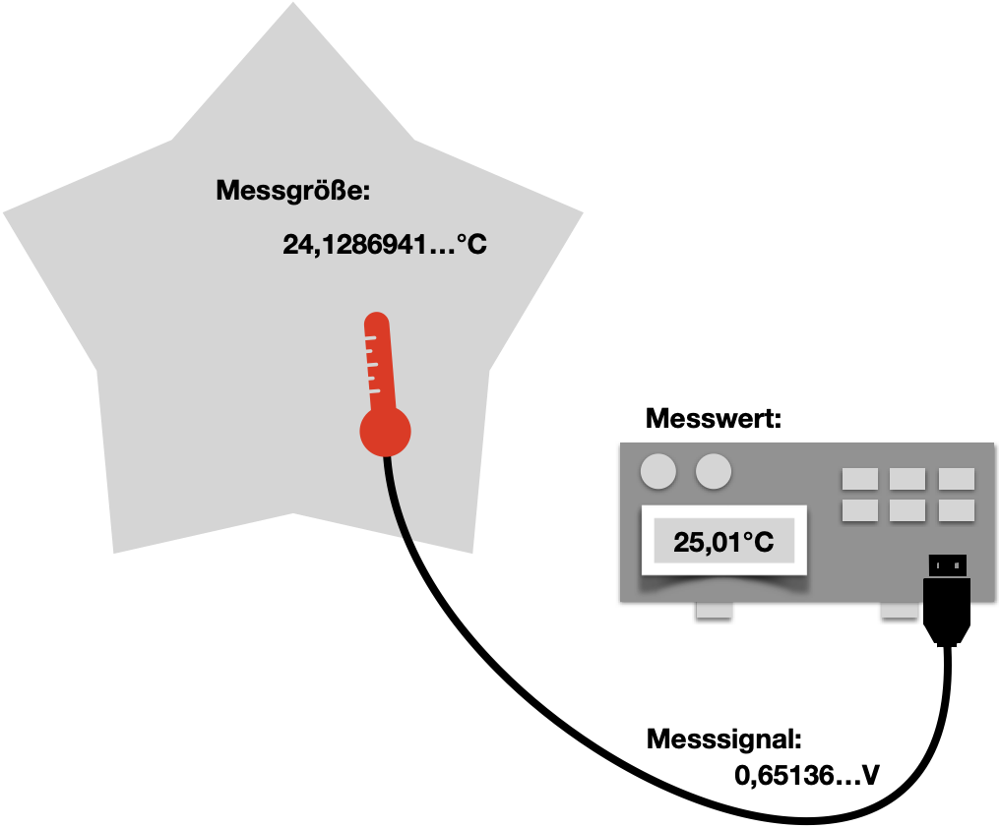
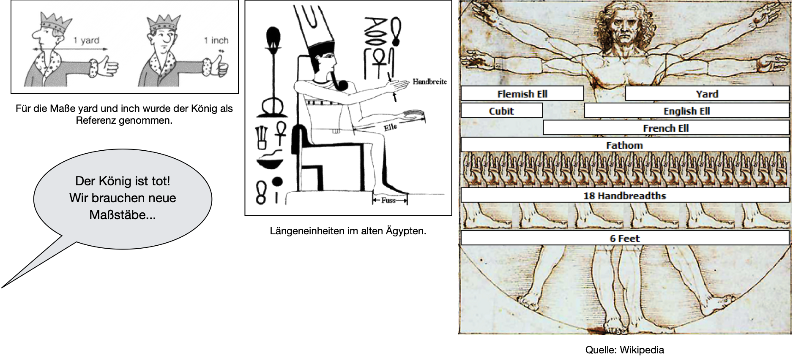
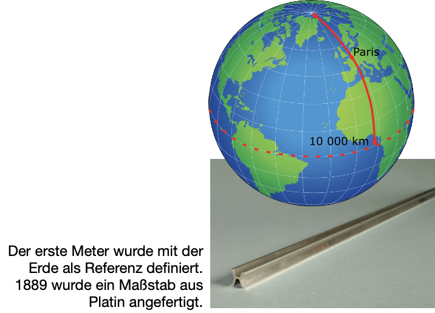
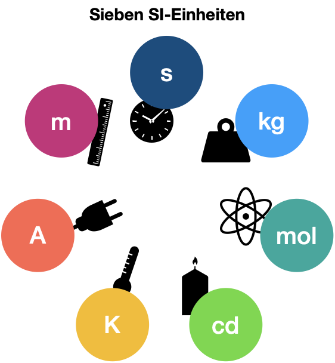
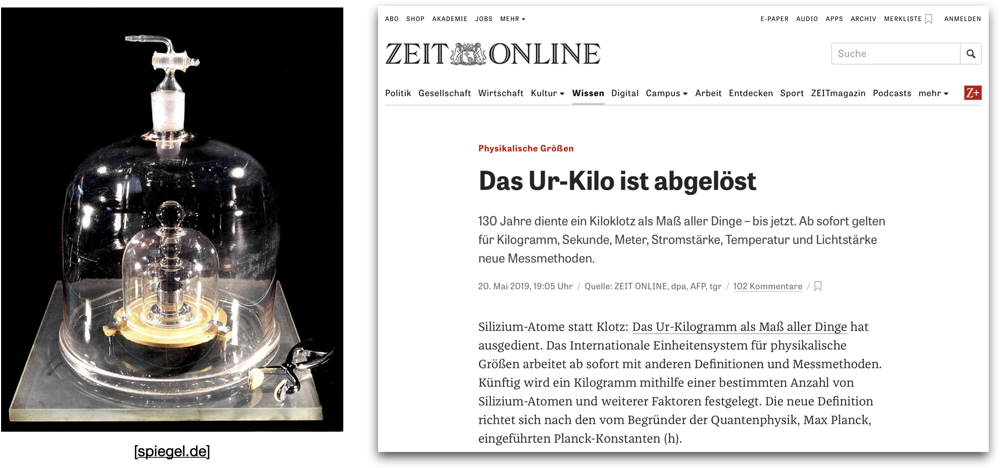
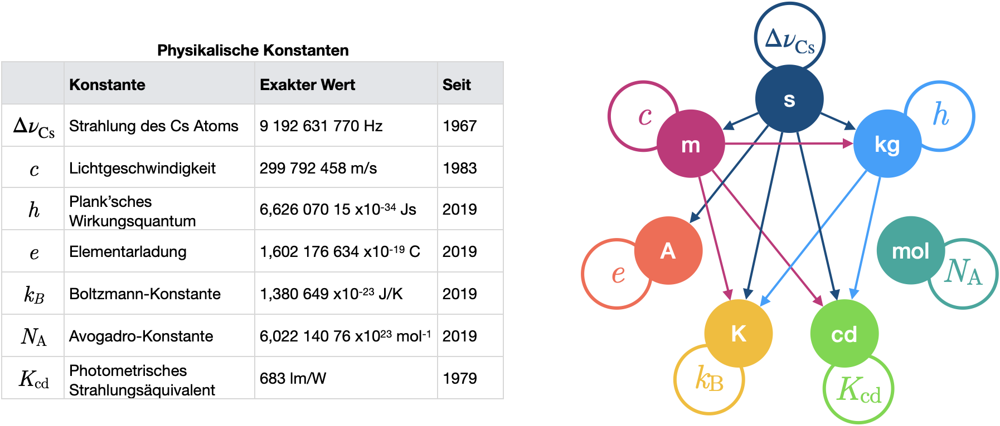
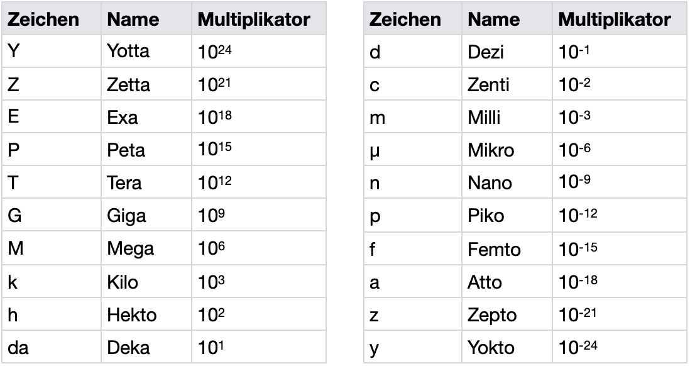

Grundlagen der Messtechnik
Contents
Grundlagen der Messtechnik#
Was ist die Aufgabe der Messtechnik? Wozu braucht man sie? Wo taucht sie auf? Wer nutzt sie? Im Alltag findet man die Messtechnik überall, zum Beispiel im Handy, bei Temperatur- oder Stickstoffmessungen in der Umwelt oder in der Prozess- und Fertigungstechnik. Es bedarf einer bestimmten Struktur und Vorgehensweise, um physikalische oder chemische Größen zu beschreiben und auswerten zu können. Wir werden die Fragen beantworten, was die Eigenheiten und Einheiten bestimmter physikalischer Messgrößen sind, welches Messgeräte für diese existieren und was bei der Anwendung beachtet werden muss.
Heutzutage bestehen messtechnische Lösungen fast ausschließlich aus elektronischen Systemen. Häufig werden eigenständige Messgeräte oder elektronische Messmodule für den PC benutzt, welche stets elektronische Bauelemente und Schaltungen nutzen. Deshalb werden wir uns insbesondere auch mit der Messung von elektrischen Kenngrößen (Spannungen, Ströme, Leistungen, Widerstände, Kapazitäten, Induktivitäten) beschäftigen werden.
Für das Messen von nicht-elektrischer Größen - was in der Mehrheit der Anwendungen von Interesse ist - werden in der Messtechnik zusätzliche Sensoren eingesetzt. Ein Sensor wandelt nach einem bestimmten physikalischen (oder chemischen) Funktionsprinzip die nicht-elektrische Größe in ein elektrisches Signal um, das mit elektronischen Schaltungen weiterverarbeitet werden kann. Beispiele für über Sensoren erfassbare nicht-elektrische Größen sind beispielsweise Temperatur, Druck, Feuchte, Durchfluss, Weg, Winkel, Kraft, Druck, Beschleunigung, CO2-Konzentration, Schalldruck etc.
Messen#
Ein Messobjekt hat eine bestimmte Messgröße (physikalische Größe, Temperatur, Stormstärke, …) von welcher der Messwert bestimmt werden soll. Hierfür wird ein Verfahren benötigt, um die Größe zu extrahieren, was durch ein passendes Messgerät geschieht.
Im Bild wird ist das Beispiel einer Temperaturmessung gezeigt. An einem bestimmten Ort herrschende Messgröße, hier 24,1286941…°C, wird mittels eines geeigneten Aufbaus in einen Messwert von 25,01°C überführt. Der Messwert kann uns direkt angezeigt werden oder er kann in nachfolgenden elektronischen Systemen zur Weiterverarbeitung in geeigneter Form zugeführt werden.
Von einem Messsignal, \(x_1\) (im Gegensatz zur Begrifflichkeit Messgröße) spricht man, wenn direkt mit der Messgröße zusammenhängende elektrische Signale zwischen den beiden Stellen, an denen Messgröße und Messwert anfallen, gemessen werden (zum Beispiel das Kabel in der Skizze). Messsignale tragen die Information über die Messgröße, welche auf unterschiedlichste Weise realisiert werden z.B. als analoger Spanungs- oder Stromwert, als frequenzmoduliertes Signal, als Digitalwort oder ähnliches.

Wird ein Messwert, \(y\), bestimmt, so entspricht dieser im Rahmen der Messtechnik einem Vielfachen, \(n\), von einer Einheit, \(E\):
Ein Messgerät bestimmt ein Vielfaches einer Einheit. Damit dies überall auf der Welt gleich gut funktioniert muss ein Messgerät entsprechend geeicht oder kalibriert werden. Außerdem gibt es auch noch den Begriff des Justierens. Dieser beschreibt die Anpassung eines Messgerät an verschiedene Umgebungen. Evtl. müssen Messgeräte bei unterschiedlichen Temperaturen anders behandelt werden und entsprechend einjustiert werden.
Häufig werden Prozesse in der Messtechnik mittels Blockdiagrammen dargestellt:
Wie man an der oben dargestellten Temperaturmessung sieht, sind die Werte, die gemessen werden, nicht unbedingt exakt. Später befassen wir uns noch mal genauer mit den so genannten Messabweichungen.
Wissenschaft des Messens#
Wunder an Präzision (2600 v. Chr.): Cheops-Pyramide
Wunder an Präzision (2600 v. Chr.): Cheops-Pyramide
Die Cheops-Pyramide ist die älteste und größte der 3 Pyramiden von Gizeh. Sie wurde als Grabmal für den ägyptischen König (Pharao) Cheops errichtet, der während der 4. Dynastie im Alten Reich regierte (2620-2580 v. Chr.) und sie gehört zu den 7 Weltwundern der Antike. Sie ist eines der einzigen Weltwunder, welches bis heute erhalten geblieben ist. Die Seitenlänge beträgt \(230,33\,\mathrm m \pm 4\,\mathrm{cm}\) und die Höhe \(146,59\,\mathrm m\) und war damit 4000 Jahre lang das höchste Bauwerk der Welt. Ihre Einmessung wurde in sehr hoher Genauigkeit vorgenommen, welches in nachfolgenden Bauten nicht mehr erreicht wurde. Sie ist genau nach den vier Himmelsrichtungen ausgerichtet und der Unterschied in den Längen ihrer vier Seiten beträgt weniger als ein Promille!
Im Allgemeinen sind ‚nur‘ drei Parameter maßgeblich, um die Präzision einer Pyramide zu bestimmen:
die waagrechte Ausrichtung des Fundaments und aller folgenden Bauschichten,
die Orientierung nach den Himmelsrichtungen,
die Seitenneigung der Flächen.
Alle drei Parameter müssen nicht nur bei Baubeginn exakt festgelegt, sondern vor allem auch während des Baus kontinuierlich kontrolliert und nachgemessen werden, sonst wird das ganze Bauwerk sichtbar unregelmäßig. Es genügt nicht, beispielsweise die horizontale Ausrichtung lediglich bei Baubeginn festzulegen und dann drauflos zu bauen. Bei der enormen Höhe der großen Pyramiden von Gizeh würde ein sich wiederholender Messfehler von wenigen Millimetern nach oben hin multipliziert. Erwägt man also mögliche Messmethoden im Hinblick auf ihre Tauglichkeit beim Pyramidenbau, müssen drei wesentliche Bedingungen erfüllt werden:
Die Messtechnik ist mit steinzeitlichem Werkzeug und Wissen möglich.
Sie ist realistisch geeignet, bei den beträchtlichen Dimensionen der Pyramiden zumindest die erreichte Genauigkeit zu liefern.
Sie ist auch in großer Höhe und auf kleiner Fläche anwendbar, so dass sie bei jeder neuen Schicht wiederholt werden kann.
Wie hat man die Präzision im Pyramidenbau im Jahre 2600 v. Chr. erreicht? Bei den Ägyptern verwandte man sogenannten Körpermaße. Üblich waren z.B. Elle und Fuß. Verbindliche und reproduzierbare Maßeinheiten bei den Pyramidenbauern waren sogenannte Längennormale aus Holz. Diese Normale mussten jeden Monat mit der königlichen Elle oder meh – einem Primärnormal aus Granit, das der Unterarmlänge des Pharaos entsprach – neu kalibirert werden. Dieses Verfahren funktionierte erstaunlich gut, denn eine Vernachlässigung des Kalibriergebots wurde schließlich mit dem Tod bezahlt. Die erreichte Präzision beim Pyramidenbau wird daran deutlich, dass die Abweichungen zwischen den Kantenlängen der Basis einer Pyramide teilweise lediglich 0,06 % betrugen.
# diesen Code durch Eingabe von <shift><ret> ausführen
laenge_pyramide = 230.33 # in m
abweichung = 0.14 # in m
relative_abweichung = abweichung / laenge_pyramide
print('relative Messabweichung der Cheops-Pyramide: ', relative_abweichung*100, '%')
relative Messabweichung der Cheops-Pyramide: 0.06078235575044501 %

Bis zum 18. Jhd. orientierten sich die meisten Maßeinheiten weiterhin am Menschen, wobei natürlich regionale Abweichungen beachtet werden mussten! Die Regensburger Elle war etwa \(81,1\,\mathrm{cm}\) lang, während die Bremer Elle dagegen nur \(54,7\,\mathrm{cm}\) aufwies.
Die Griechen übernahmen beispielsweise die ägyptischen Längenmaße und führten das Stadion ein (die Länge, die ein geübter Läufer schnell zurücklegen kann, etwa \(180\,\mathrm m\)).
Die Römer führten zur Messung der großen Entfernungen in ihrem Straßennetz die Meile als neues Längenmaß hinzu.
1101 führt Heinrich I. von England die Längeneinheit Yard (Abstand von seiner Nasenspitze bis zum Daumen seines ausgestreckten Armes) und Inch (Breite seines Daumens) ein.
Eduard II. von England erklärt die Länge von einem Zoll zum Längenmaß. Es hat die Länge dreier hintereinandergelegter Gerstenkörner.
Der Mathematiker J. Kölbel schlägt an Stelle eines Körpermaßes ein sogenanntes Naturmaß vor: “16 Männer groß und klein”, die nach einer Messe der Reihe nach aus der Kirche kommen, stellen ihre Füße hintereinander. Der sechzehnte Teil der Gesamtlänge soll dann ein Fuß sein.
Es wird deutlich, wie zufällig jedes Herzogtum seine eigenen Einheiten eingeführt hatte was teilweise zu großem Chaos geführt hatte. Die Körpermaße einzelner Herrscher wurden als Längeneinheit benutzt, die nur lokal Gültigkeit besaßen und auch lokal Individuell festgelegten Einheiten erschwerten internationalen Handel und Probleme in Forschung, Technik und Kommunikation.
Maßeinheiten#
Aufgrund der im vorherigen Kapitel erläuterten regionalen Unterschiede, beschloss 1790 die französische Nationalversammlung im Geiste der französischen Revolution und unter dem Motto „À tous les temps, à tous les peup- les“ (Für alle Zeiten, für alle Völker) die Schaffung eines neuen Einheitensystems. Der erste Antrag wurde am 07. Oktober für die Maßeinheit Meter gestellt. Ein Meter sollte als der zehnmillionste Teil des Erdmeridianquadranten definiert sein. Die Gelehrtenkommission (Borda, Condorcet, Lagrange, Laplace und Monge) hat zwei Maßeinheiten wiefolgt definiert:
Der Meter als universelle Maßeinheit der Länge sollte den zehnmillionsten Teil der Entfernung vom Nordpol zum Äquator über Paris betragen;
das Kilogramm als universelle Maßeinheit der Masse sollte der Masse eines Kubikdezimeters Wasser entsprechen.
1799 wurde das Naturmaß Meter wieder durch ein Kunstmaß ersetzt, da die Meterfestlegung mit der Erde als Referenz, messtechnisch nur sehr aufwendig zu wiederholen ist:
Man fertigte einen Maßstab aus Platin an, der als Urmeterstab in Paris aufbewahrt wurde
1889 wurde der Platinstab durch einen Platin-Iridium-Körper mit X-förmigem Querschnitt ersetzt (90% Platin und 10% Iridium). Auf diesem wurden 2 Mittelstriche markiert, welche den Meter angeben. Bei Temperaturverändungern von 0°C auf 20°C verlängert sich das “Meter” um 0,3 mm, wobei die Ablesegenauigkeit hierbei 0,01 mm betrug.

SI-Einheiten#
Im Rahmen der Meterkonvention im Jahr 1960 wurde das Internationale Einheitensystem, kurz SI, benannt nach „le Système Internationale d’unités“, eingeführt. Die Definitionen der Basiseinheiten basierten nach wie vor teilweise auf materiellen Prototypen (bis 2019 war dies tatsächlich beim Kilogramm der Fall). Das SI basiert auf der Idee, dass sich im Prinzip alle relevanten Messgrößen über physikalische Gesetze auf genau 7 Basisgrößen zurückführen lassen. Diese 7 Basisgrößen sind die Basiseinheiten, aus denen alle weiteren Einheiten abgeleitet werden können:
Meter (m) als Einheit für die Länge
Kilogramm (kg) als Einheit für die Masse
Sekunde (s) als Einheit für die Zeit
Ampere (A) als Einheit für die elektrische Stromstärke
Kelvin (K) als Einheit für die thermodynamische Temperatur
Candela (Cd) als Einheit für die Lichtstärke und
Mol (mol) als Einheit für die Stoffmenge

Das Ur-Kilo in Paris
Mit Ausnahme des Kilogramms wurden bis vor Kurzem alle Basiseinheiten über reproduzierbare Experimente eindeutig festgelegt. Die Sekunde ist zum Beispiel darüber definiert, als das sie das 9192631770-fache der Periodendauer einer bestimmten Strahlung ist, nämlich der des Übergangs zwischen den beiden Hyperfeinstrukturniveaus des Grundzustands von Atomen des Nuklids 133-Cäsium. Im Prinzip könnte sich also jeder das Element Cäsium besorgen, eine Atomuhr betreiben, und somit seine Sekunde zuhause definieren. Oder man spart sich die Arbeit und sucht eine der Kalibrierbehörden auf. 1983 wird die Länge eines Meters als “jene Wegstrecke, die das Licht im Vakuum während der Dauer von 1/299792458-tel einer Sekunde zurücklegt”, festgelegt. Somit war das Meter die erste Einheit, welche durch eine Naturkonstanten, nämlich die Lichtgeschwindigkeit c = 299792458 m/s definiert, bzw. festgelegt wurde. Andere Einheiten waren in der Praxis schwieriger umzusetzen, wie z.B. das Ampere. Für die Definition eines Amperes wurde die Kraft zwischen 2 stromdurchflossenen Leitern gemessen, was extrem unpraktisch ist. Eine große Ausnahme ist und blieb das Ur-Kilo, welches als Prototyp von 1889-2018 in Paris als internationale Referenz sicher (bzw. vermeintlich sicher) aufbewahrt wurde. Das Ur-Kilo war:
ein 3,9 cm hoher und 3,9 cm dicker Metallzylinder, der zu 90% aus Platin und zu 10% aus Iridium besteht
Seit 1889 ist dieser “Block” das Referenznormal für Kilogramm
es wird unter drei Glasglocken in einem Tresor des “Internationalen Büros für Maß und Gewicht” (BIPM) in Paris aufbewahrt
keine Lösung für die Ewigkeit, denn - keiner weiß warum - aber das Ur-Kilo wird immer leichter
50 Mikrogramm hat es in den letzten 129 Jahren im Vergleich zu seinen 70 offiziellen Kopien weltweit verloren

Das klingt erstmal nicht viel, wird aber in unserer Hightech-Welt, in der schon in Nanometern (Millionstel Millimeter) oder Femtosekunden (Millionstel einer Milliardstel Sekunde) gemessen wird, mehr und mehr zum Problem.
Seit 2018 werden alle SI-Einheiten von Naturkonstanten abgeleitet. Bei den drei Basiseinheiten Meter, Sekunde und Candela hat sich nichts substantielles geändert, lediglich die Formulierung der Definition wurde angepasst, z.B.:
Die Sekunde ist ab sofort dadurch definiert, dass die Frequenz der Cäsium-Strahlung, \(\Delta \nu_\mathrm{133Cs}\), exakt den Wert 9192631770 annimmt, wenn man diese in 1/s ausdrückt:
(Cäsiumuhren haben übrigens eine Störanfälligkeit von 1:1e13, das entspricht einer Abweichung von 1s in 300000 Jahren.)
Das Meter wird ähnlich wie zuvor über die Lichtgeschwindigkeit \(c\) ausgedrückt:
Die Candela wird von der photometrische Strahlungsäquivalent \(\mathrm K_\mathrm{cd}\) (ebenfalls eine Naturkonstante) abgeleitet. Sie wird über die SI-Einheiten kg, m, s und Steradiant (sr = m\(^2\)/m\(^2\)) definiert.
Anders sieht es bei den weiteren vier Basiseinheiten aus, für die Naturkonstanten gefunden und festgelegt wurden:
Das Kilogramm ist nun durch Ableitung aus dem Planckschen Wirkungsquantum \(h = 6,62607015 \cdot 10^{-34}\,\mathrm{Js}\) definiert, wobei die Einheit J (Joule), wie unten noch aufgeführt wird, nichts anderes als kgm\(^2\)/s\(^2\) ist.
\(h\) wird dabei in Kooperation der metrologischen Institutionen in Form aufwendiger Experimente in entsprechender Genauigkeit bestimmt.
Das Ampere wird dadurch definiert, dass die Elementarladung \(e = 1,602 176 620 8 \cdot 10^{−19}\,\mathrm{As}\) beträgt:
Das Kelvin ist die Einheit der thermodynamischen Temperatur, über die Boltzmann-Konstante \(k_B = 1,380 648 52 \cdot 10^{−23}\,\mathrm{kg m^2 s^{−2} K^{−1}}\).
Das Mol ist dadurch definiert, dass die Avogadro-Konstante \(N_A = 6,022 140 857 \cdot 10^{23}\,\mathrm{mol^{−1}}\) beträgt.
\(N_A\) ist die Zahl, der in einem Mol enthaltenen Atome. Sie ist so definiert, dass 12 g Kohlenstoff (12C) genau einem Mol entspricht.

Abgeleitete / Ergänzende SI-Einheiten#
SI umfasst auch eine Aufzählung weiterer Einheiten, welche von den 7 Basiseinheiten, oder über physikalische Gesetzmäßigkeiten, abgeleitetet werdem können. Hier nur einige Beispiele:
1 Hz (Hertz für Frequenz) = 1/s
1 N (Newton für Kraft) = kgm/s\(^2\)
1 Pa (Pascal für Druck) = 1 N/m\(^2\) = 1 kg/ms\(^2\)
1 J (Joule für Energie) = 1 Nm = 1 kg\(^2\)/s\(^2\)
1 W (Watt für Leistung) = 1 J/s = 1 kgm\(^2\)/s\(^3\)
1 V (Volt für Spannung) = 1 W/A = 1 kgm\(^2\)/s\(^3\)A
1 H (Henry für Induktivität) = 1 Vs/A = 1 kgm\(^2\)/s\(^2\)A\(^2\)
1 F (Farad für Kapazität) = 1 As/V = 1 s\(^4\)A\(^2\)/kgm\(^2\)
Zwischen verschiedenen physikalischen Teildisziplinen kann nun auch mit den Einheiten hin und her jongliert werden. So kommt die Leistung (W) sowohl in mechanischen, als auch auch elektrische Gesetzmäßigkeiten vor. Man kann durch die elektrische Spannung (V) durch eine Kombination des Amperes (elektrische Basiseinheit) mit mechanischen verknüpfen.
Ergänzende Einheiten im SI-System sind beispielsweise:
1 rad (Radiant) = 1 m/m, welches der ebene Winkel zwischen zwei Radien eines Kreises ist, falls der dadruch beschriebene Kreisbogen genauso groß ist wie der Radius. Der Umfang eines Kreises ist bekannterweise \(2\pi \cdot r\), wobei \(r\) der Kreisradius ist. Dadurch entspricht eine komplette Drehung einem Winkel von \(2\pi\,\mathrm{rad}\)
1 sr (Steradiant) = 1 m\(^2\)/m\(^2\) ist der räumliche Winkel (analog zum Radiant). Dieser schließt mit der Kugelmitte als Scheitelpunkt eine Fläche auf der Kugeloberfläche sein. Diese Fläche ist quadratisch mit einer Seitenlänge die dem Kugelradius entspricht. Die Einheit kann also ebenfalls auf Basiseinheiten zurückgeführt werden, hier 1 sr = m\(^2\)/m\(^2\).
Nicht-SI-Einheiten#
Es gibt diverse zusätzliche Einheiten, welche keine offiziellen SI-Einheiten sind, aber aufgrund ihrer großen Beliebheit und Handbarkeit gerne benutzt werden. Im Allgemeinem gibt es aber immer Zusammenhänge zu den SI-Einheiten, sodass sie sich in solche umformen lassen. Beispiele sind z.B.:
Grad Celsius: 1°C = K + 273,15
Grad Fahrenheit: 9/5 K - 459,67
Minute: 1 min = 60 s
(Winkel-)Grad: 1° = \(\pi\)/180 rad
(Winkel-)Minute: 1’ 1/60°
Liter: 1 l = 1 dm\(^3\)
Tonne: 1 t 10\(^3\) kg
Bar: 1 bar = 10\(^5\) Pa
Dann gibt es noch historisch gewachsene Einheiten, wie z.B. die Meile, yard, foot, inch, once, pound, gallon, welche sich analog in SI-Einheiten umrechnen lassen. Diese Umrechnung ist global nicht immer die gleiche und es existieren für dieselbe Einheit unterschiedliche Umrechnungen (USA und UK sind hier die wohl bekanntesten Beispiele). Doch auch je nach Anwednungsgebiet gibt es Unterschiede:
1 mile = 1 Landmeile = 1.609,344 m (US)
1 nautical mile = 1 Seemeile (oder Luftfahrt) = 1.853,2 m (UK)
1 mile = exakt 1.852 m (international)
Einheiten, die zwar in Gebrauch sind, aber nicht auf SI-Einheiten zurückzuführen sind, wurden für spezifische Einsatzgebiete konkret festgelegt:
die Wasserhärte
das Mostgewicht
den Feingehalt von Gold- und Silberlegierungen
die Windstärke
den Seegang
die Stärke von Erdbeben
Vorsätze und Präfix im SI#
Zum SI, bzw. prinzipiell angewendet in allen anderen Einheiten, sind sogenannte Präfixe / Vorsätze definiert. Teile oder Vielfach von SI-Einheiten können in Kurzform geschrieben werden, was das Lesen erleichtert. So können besonders große oder besonders kleine Zahlen übersichtlicher dargestellt werden. Dafür muss der oder die Forschende oder Ingeneur:in lediglich ein paar Vokabeln können:

Logarithmische Einheiten#
In der Messtechnik können unter Umständen Messwerte in ganz unterschiedlichen Größenordnungen anfallen. Daher haben wir uns ja im Kapitel vorher die Präfixe bzw. Vorsätze angesehen. Für eine Darstellung im Diagramm, bei dem die Achsen typischerweise eine feste Einheit besitzen, wird es dennoch schwierig, die Gesamtheit der Messreihe übersichtlich darzustellen. Daher bedient man sich häufig der logarithmischen Darstellung, welche im ersten Moment relativ umständlich und kompliziert erscheint, aber einen hohen Nutzen hat. Diese Darstellung ist auch im SI-System vorgesehen.
Der eigentlich Messwert auf einen wohl definierten Referenzwert bezogen wird. Man bildet also den Quotienten aus Messwert und Referenzwert, \(P/P_\mathrm{ref}\) (bei Leistungen) oder \(U/U_\mathrm{ref}\) bei Spannungen. Danach werden diese Quotienten logarithmiert, fast ausschließlich mit der 10er-Logarithmus (log). Der neue Wert ist per Definition einheitenlos, wird aber die Einheit Dezibel (dB) zugeordnet, also das Zehntel eines Bels. Ganz selten wird der natürlich Logarithmus benutzt, dann wird die Einheit Neper (Np) angewendet.
In der Messtechnik hat es sich etabliert (ungeschriebenes Gesetz), dass in erster Linie Leistungen gemäß der eben beschriebenen Gesetzmäßigkeit in der Einheit dB umgewandelt werden, man spricht hierbei von der Leistungsgröße:
Man spricht von der Feldgröße, wenn Spannungen in die Einheit dB umgewandelt werden:
Aufgabe
Beweise die Umformung von Leistungsgröße in Feldgröße! Hinweise: Es gilt \(P \propto U^2\)
Logarithmische Darstellungen finden meistens nur bei elektrischen Leistungen und Spannungen statt. Häufig wird das Dezibel z.B. in der Hochfrequenztechnik verwendet oder bei der Charakterisierung von Frequenzgängen (dazu kommen wir später noch). Im Allgemeinen spricht man von Pegeln, sobald die Messwerte logarithmisch angegeben sind. Bei der Angabe von Messwerten in der Einheit Dezibel muss stets darauf geachtet werden den Refrenzwert mitanzugeben. Typische Schreibweisen hierzu sind z.B.
dB(mW): es handelt sich um einen Leistungspegel und der Referenzwert ist 1 mW
dB(mV): es handelt sich um einen Spannungspegel und der Referenzwert ist 1 mV
dB(\(\mu\)V): es handelt sich um einen Spannungspegel und der Referenzwert ist 1 \(\mu\)V Ohne die Angabe des Referenzwertes ist weder die physikalische Größe, noch der Skalierungsfaktor bekannt, und daher sehr wichtig, falls der Dezibel-Wert später in absolute Einheiten zurück konvertiert werden sollte.
Für Leistungspegel gilt also im Allgmeinen (für einen typischen Referenzwert von 1 mW)
1 \(\mu\)W = 0,000001 W = -30 dB (mW)
Aufgabe
In folgendem Code-Block können Umrechungen für verschiedene Messwerte ausprobiert werden:
import numpy as np
P = 1e-6 # Messwerts, hier 1 uW
P_ref = 1e-3 # Referenzwert = 1 mW
P_dB = 10 * np.log10(P/P_ref) # Achtung: in numpy ist "log" der natürlich Logarithmus ln
print('Leistung = %.e W = %.10f W' %(P, P))
print('Pegel in dB: ', P_dB, '(%.3f)' %(P_ref))# In diesem Code Block können Umrechnungen für verschiedene Messwerte ausprobiert werden:
Leistung = 1e-06 W = 0.0000010000 W
Pegel in dB: -30.0 (0.001)
Kalibrieren und Eichen (und Prüfen)#
Es gibt verschiedene Sprachlichkeiten in der Messtechnik, die im folgenden einmal kurz definiert werden, da es hier in der Umgangssprache häufig zu Unkorrektheiten kommt. Der Unterschied zwischen messen und prüfen ist nicht immer klar. Im technischen Bereich versteht man unter prüfen, ob ein Prüfgegenstand bestimmte Vorgaben erfüllt. Diese werden dann auch in Form von Prüfbedingungen spezifiziert. Zum Beispiel kann man auf elektromagnetische Verträglichkeit (EMV) prüfen., diese werden in Normen festgehalten, welche wiederum ganz konkrete Randbedingungen für Messaufbauten - zur Messung von elektromagnetischen Störungen - bei Messgeräten gegeben sein müssen. Messgeräte können also darauf geprüft werden, ob diese Normen eingehalten werden und die Messungen entsprechend durchgeführt und ausgeführt werden. Prüfen ist also etwas mehr, als nur das Messen einer Größe.
Kalibrieren und Eichen#
Messsysteme haben bekannterweise Messgenauigkeiten (darauf kommen wir später noch mal zurück), welche eine Messung limitieren. Die erzielbare Messgenauigkeit kann werksseitig während des Herstellprozesses oder später, in der gewünschten Testumgebung, verbessert werden. Hierzu benötigt man eine bekannte Referenz, die an das Messgerät angeschlossen werden kann. Nun kann das Messsystem entweder eingestellt werden, sodass der angezeigt Messwert möglichst genau dem bekannten Referenzwert entspricht. Dieses Verfahren nennent man auch Justieren oder Kalibrieren.
Unter dem Begriff Eichen hingegen versteht man die Prüfung und Stempelung eines Messgeräts, welches nach gesetzlichen Eichvorschriften erfolgt ist. Geeicht werden müssen Messsysteme, die im gewerblichen Verkehr oder Handel eingesetzt werden sollen, wie z.B. eine Obst- und Gemüsewaage an der Kasse eines Supermarktes. Dem Verbraucher wird damit eine bestimmte Sicherheit gegeben, dass die Waage - innerhalb bestimmter Grenzen - genau arbeitet. In Deutschland existiert dafür die sogenannten Eichordnung. Da das Eichen ein hoheitlicher Akt ist, kann es nur in vom Statt autorisierten Behörden durchgeführt werden, in den sogenannten Eichämtern, und muss in bestimmten Abständen wiederholt werden. Um generell eine möglichst gute Genauigkeit und hohe Manipulationssicherheit sicherzustellen, werden die meisten Messgeräte bereits während des Herstellungsprozesses kalibirert oder geeicht. In Deutschland macht dies häufig die Physikalisch-Technische Bundesanstalt (PTB) in Braunschweig und Berlin.
Normale#
Normale sind Maßverkörperungen, welche einfach handhabbar sind und von Basisgrößen abzuleiten sind. Wir wissen, dass die Basiseinheiten - bzw. die von ihnen ableitende Einheiten - über atomare Naturkonstanten definiert sind. Dies ist in der Praxis allerdings sehr unpraktisch und in Betrieben nicht realisierbar. Im BIPM (Internationales Büro für Maß und Gewicht) werden praktisch anwendbare Primärnormale direkt von Basisgrößen abgeleitet und hergestellt. Diese werden ständig überwacht um deren Genauigkeit sicherzustellen. Für so ziemlich jede Messgröße existieren solche Primärnormale, wie z.B. für Ohm, Volt, Henry, Farad usw. Alle Staaten, die damals bei der Generalkonferenz für Maß und Gewicht den Vertrag unterzeichnet haben, erhalten jeweils ein solches Primärnormal. Von diesen werden dann sogenannte Sekundärnormale innerhalb der Staaten abgeleitet, welche dann wiederum zur Eichung von betrieblichen Arbeitsnormalen in Eichlaboren (oder Behören oder Ämtern) zur Verfügung stehen. Arbeitsnormale, abgeleitet von den Skundärnormalen, werden in Firmen verwendet, um ihre betrieblichen Messmittel eigenhändig kalibrieren zu können.